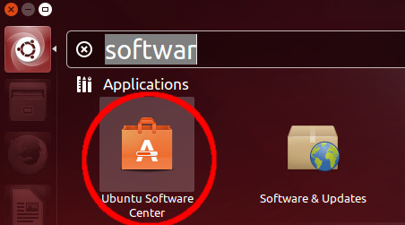
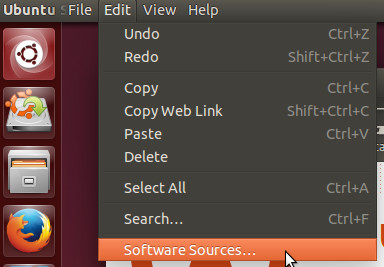
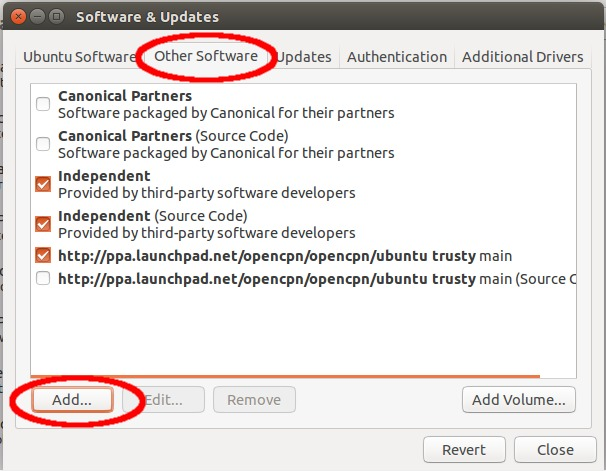
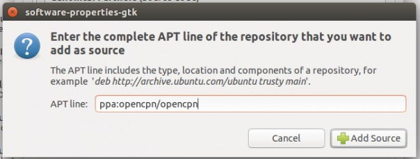
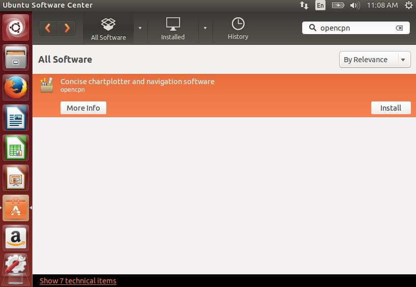

Ubuntu PPA
How to add the OpenCPN PPA into an Ubuntu system
You have two options to add the PPA to your system, either using the commandline Terminal or the GUI provided by the system, chose one that suits you better, not both.
If you are using a non-standard variant of Ubuntu or a newer/older/whatever version than the one used while creating this guide, the GUI may be slightly different, try to use common sense before you start to be furious that the guide below does not work - it does. If it still does not work for you, ask in the support forum, providing exact steps you performed and exact error output you get.
There are two PPA repositories, one for stable versions only and one that includes beta versions. If you want the beta versions replace the “ppa:opencpn/opencpn” string in the following instructions with “ppa:bdbcat/opencpn”.
From the command line
Open a Terminal and enter the following commands:
sudo apt-get install software-properties-common sudo add-apt-repository ppa:opencpn/opencpn sudo apt-get update sudo apt-get install opencpn
===
Using the graphical configuration tools ===
Start the Ubuntu Software Center

From the Edit menu, select Software Sources…

On the Other tab, click on Add… button

In the dialog shown, fill in ppa:opencpn/opencpn (for stable versions) or ppa:bdbcat/opencpn (for beta versions) and click on the Add Source button

Wait until Ubuntu Downloads the necessary information and the progress indicator disappears

From now on you are able to install OpenCPN as any other software. You will also get new stable versions automatically while updating your system.
